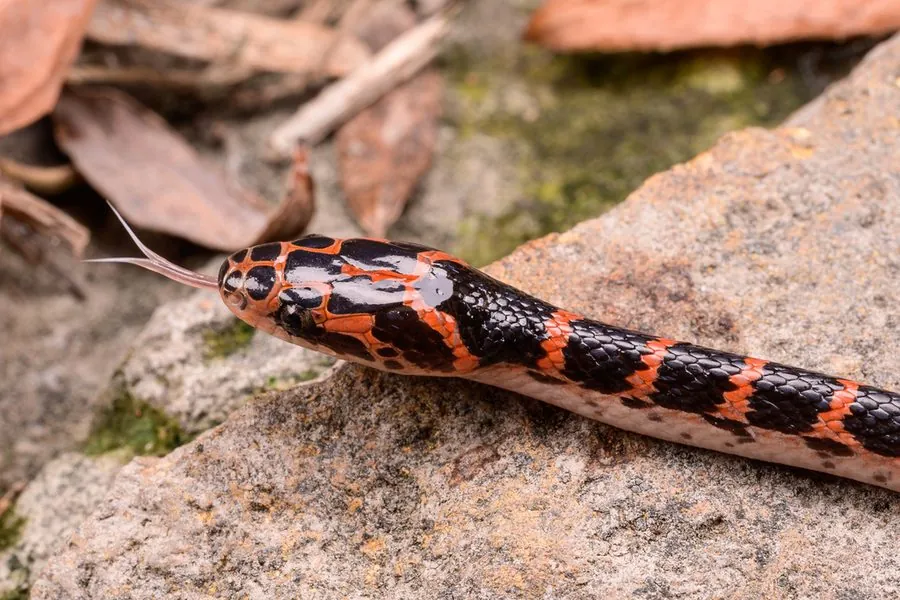

爬行动物 · 动物界
赤链蛇 Lycodon rufozonatus

中国常见的中小型蛇类，身上有红黑相间的环纹，多在夜间活动，捕食鼠类和蛙类，对人基本无害，是农田中常见的益蛇。
- 分类
- 门脊索动物门纲爬行纲目有鳞目科游蛇科属白环蛇属
- 栖息环境
- 农田、水沟、草地、石堆、灌丛与村舍附近
- 地理分布
- 中国大部分地区及朝鲜半岛、日本、越南
- 保护级别
- IUCN 无危（LC）；中国未列入国家重点保护名录
物种志
赤链蛇体长 1–1.5 米，身体较细，头部略扁，吻端钝；体色以黑色或黑褐色为底，体表和体侧布满红色或橙红色的横斑与环纹，斑纹在体侧常呈断续状，“赤链”之名由此而来，腹部淡黄并带黑斑。它行动敏捷，常在夜间活动。
它分布于中国大部分地区以及朝鲜半岛、日本和越南，栖息于农田、水沟、草地、石堆和村舍附近，夜间捕食鼠类、蛙类、鱼类和其他蛇类。它是卵生蛇类，雌蛇每次产卵 5–15 枚，孵化期约 40–60 天。赤链蛇对人基本无害，一般认为无毒或仅有微弱毒性，被咬通常只出现轻微红肿；它捕食鼠类，是农田中的益蛇，但常因花纹醒目而被误杀，遇到时不必惊慌。
形态与习性
- 食性鼠类、蛙类、鱼类和其他蛇类
- 体长1–1.5 m
- 寿命约 10–15 年
- 繁殖卵生，5–15 枚，孵化 40–60 天
- 活动节律夜行性
- 毒性对人基本无害，被咬通常仅轻微红肿
趣味知识
- 赤链蛇身体的红色横斑被黑色隔开，像一条条红链，因此得名。
- 它虽然花纹醒目，但对人基本无害，是农田里的益蛇。
- 赤链蛇夜间活动，捕食鼠类和蛙类，常在水沟边出没。